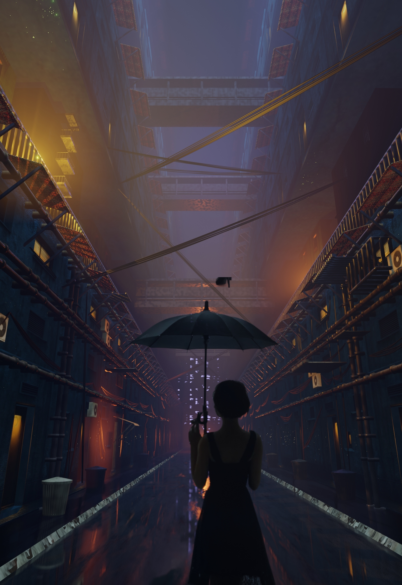
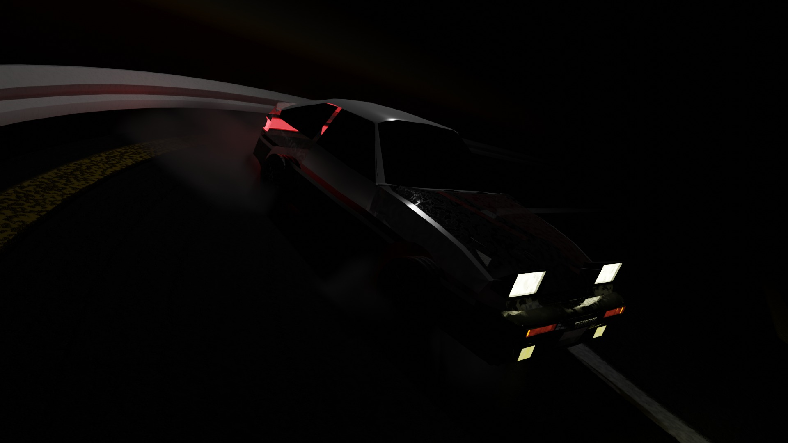
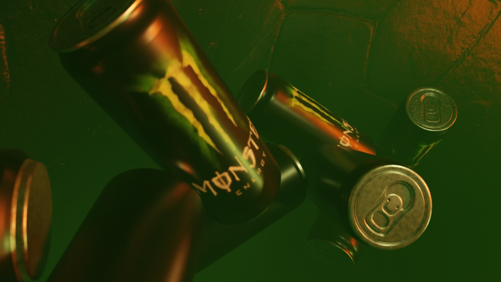
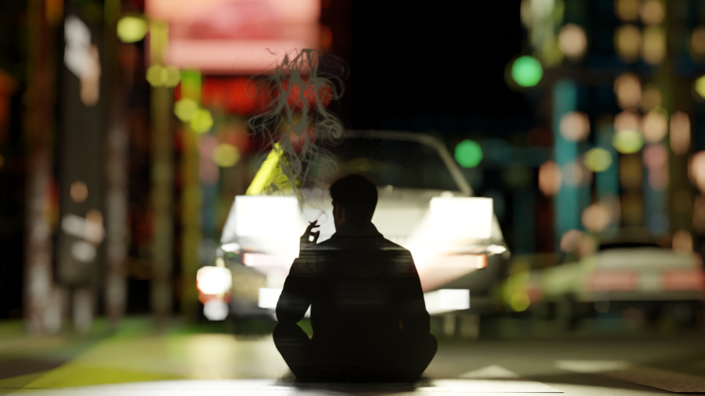

OTHERS
素材と光を探るための実験的ショット
CONCEPT
ガラス、金属、布などの素材を個別に研究し、 質感の組み合わせ方を探るために制作したショット集です。 香水ボトルの反射や、軽い布の光の受け方など、 作品単体ではなく “表現の幅” を広げることを目的としています。
TECHNIQUE
・金属の反射を抑えるためのラフネス調整 ・ガラス内部の屈折とIOR設定 ・布の柔らかさを表現するための陰影調整 ・背景と素材の馴染ませ方のテスト こうした素材単体の表現を積み重ね、 実際の作品制作で応用できる形にまとめています。
GALLERY



